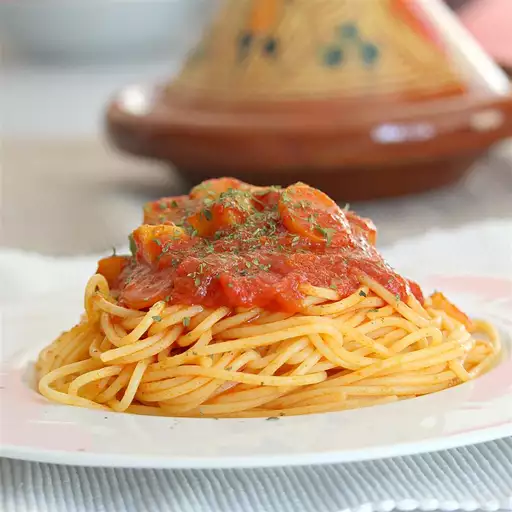

Home
Somali Spagetti And Sauce

What's Somalian Spagetti All About?
Somali Spaghetti and Sauce, or baasto iyo suugo, is a popular dish blending Italian and Somali flavors. It features spaghetti topped with a spiced meat sauce made from minced beef or lamb, tomatoes, onions, garlic, and the aromatic Somali spice mix called "xawaash".
The sauce is simmered until rich and flavorful, then served over pasta, often with a side of banana for a sweet contrast. This dish is a staple in Somali homes, especially for lunch or dinner.
Ingredients
- 2 tablespoons chopped fresh cilantro
- 4 cloves garlic
- 1 teaspoon cumin seeds
- 1 teaspoon Himalayan pink salt
- 1 teaspoon ground turmeric
- 1 teaspoon paprika
- 1 teaspoon Italian seasoning
- 1 teaspoon salt-free seasoning blend (such as Mrs. Dash)
- ½ teaspoon ground black pepper
- ¼ cup olive oil
- 1 pound lean ground beef
- 1 onion, diced
- 2 carrots, diced
- 1 large potato, peeled and cubed
- 2 (14 ounce) cans diced tomatoes
- 1 (16 ounce) package angel hair pasta
- 2 tablespoons water, or to taste (Optional)
Procedures And Steps
- Place cilantro and garlic in the bowl of a food processor; pulse until finely chopped.
- Toast cumin seeds in a small pot over low heat until fragrant, 2 to 3 minutes. Cool, 5 minutes. Grind into a powder using a spice grinder or a mortal and pestle.
- Transfer ground cumin to a small bowl. Add Himalayan pink salt, turmeric, paprika, Italian seasoning, seasoning blend, and black pepper; set spice mixture aside.
- Heat oil in a large pot over medium heat. Add ground beef; cook and stir until browned, about 5 minutes. Stir in 1/2 spice mixture. Add onion; cook and stir until softened, about 5 minutes. Add carrots and potato; cook, covered, stirring occasionally, until slightly softened, about 5 minutes.
- Stir in tomatoes; bring sauce to a boil. Reduce heat to medium-low; stir in cilantro-garlic mixture and remaining 1/2 spice mixture. Simmer, stirring occasionally, until flavors combine, 30 to 40 minutes. Thin sauce with water if it seems too thick.
- Bring a large pot of lightly salted water to a boil. Cook angel hair pasta in the boiling water, stirring occasionally, until tender yet firm to the bite, 4 to 5 minutes. Drain. Serve sauce over pasta.